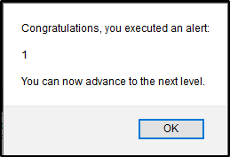

Reflected XSS Walktrough
We are going to show some Reflected XSS: DO NOT DO IT IN DOCKER!!!
Example of XSS:
<script> alert('1') </script>
A good point where to start is to check everything that has an input or a parameter:
Burp Suite is actually good on finding Reflected XSS
If we take the https://xss-game.appspot.com/?utm_source=webopsweekly&utm_medium=email
website, we can try for a basic example

